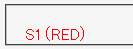
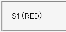

title属性を指定したstyle要素が、外部スタイルシートにおける「優先スタイルシート」として扱われる。このため、title属性を指定したstyle要素が複数ある場合は、初期状態では最初のstyle要素での指定内容だけが反映される。また、title属性を指定したlink要素がある場合は、それと同列に扱われる。
<link rel="stylesheet" type="text/css" href="normal.css" title="標準">
<style type="text/css" title="S1">
p#s1 {
color: red;
}
</style>
<p id="s1">S1（RED）</p>
S1（RED）
［title属性を指定したlink要素（外部CSS）、title属性を指定したstyle要素］の順に並べています。
Opera7.02での表示（標準モード）
Moz1.0.2での表示（標準モード）
HTML4.01などでは、style要素にtitle属性を指定することでスタイルシートを区別できるようにするとは規定されていません（区別してはならないと規定されているわけでもないのですが）。必要なければ（固定スタイルシートを示すlink要素のように）title属性は指定しないほうがよいでしょう。
Moz1.0.2/1.3betaでは標準・互換モードともに不具合の発生が確認されました。